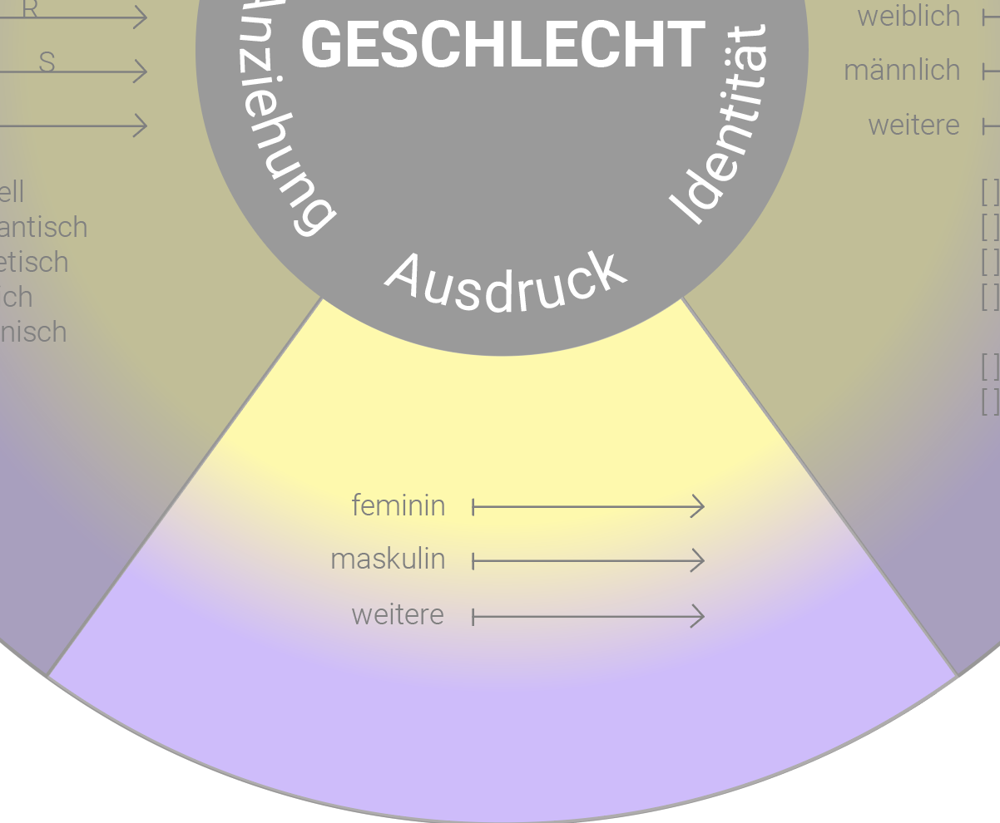

Als Ausdruck wird hier alles nach außen Wirkende eines Menschen bezeichnet, also das Aussehen, die Kleidung, die Frisur, Körperbehaarung, die Stimme, Körperform, die Art der Kommunikation und Körpersprache. 
Als Anziehung bezeichnet man das Gefühl eines Menschen, sich zu einem anderen Menschen hingezogen zu fühlen oder den Reiz, der von einem anderen Menschen ausgeht.
Das biologische Geschlecht eines Menschen wird bestimmt anhand von: Chromosomen, Keimdrüsen (Eierstöcke, Hoden), Hormonen, inneren und äußeren Geschlechtsmerkmalen (Vulva und Vagina, Penis).